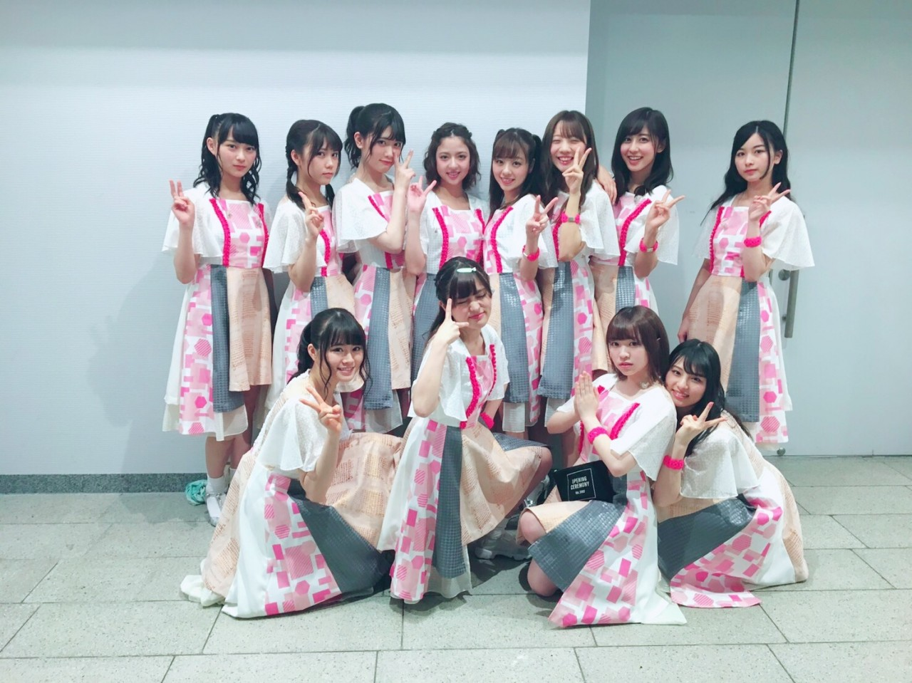
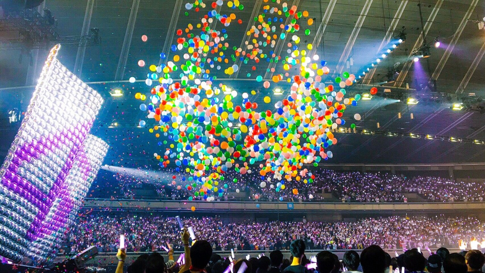

| 2017/04 22 Sat | 斎藤ちはる アンダーライブ最終日 |
ちはるーむへようこそ
今日のちはるーむではアンダーライブの余韻に浸っていました
今日はアースデー。
地球環境について改めて考える
大切な日です。
そして今日はアンダーライブ千秋楽でした！！
来てくださった皆さん
本当にありがとうございました。
喉の調子は大丈夫そうですかヽ(；；)丿
それくらい、沢山
声援を送ってくださって嬉しかったです！！
アンダーライブ。
心から楽しかった。
最初決まった時は
客席は埋まるのかどうかとか
本当に皆さん来てくれるのだろうかとか
最後まで12人で駆け抜けることは出来るのかとか
正直不安しか無かったけど...
史上最高のライブになったんじゃないかと、
私は思います。
トリプルアンコールは
私たちにとって最高のご褒美でした。
皆さんの声が、思いが
私たちに届いて本当に幸せでした。
皆さん心からありがとう！！！
そしてみんなの事が大好き！！！

最高で最強の仲間です。
------------------------------------------------♡
♬ ChihaMusic
「風船は生きている」乃木坂46
12人にしか歌えない
12人だけの曲。
私たちにとって大切な曲です。
どの公演も最初と最後は
この曲で締めくくりました。
ラストには大きな風船が立ち上り、
4公演目では大量の風船も落ちてきました。
私たちにもサプライズ。
そして真っ白なサイリウムが
とっても綺麗だった。
"感情膨らみ
強くなって飛べるはず"
もっと上へいけるはず。
頑張っていこう。

今日の千秋楽での風船は生きているの
時のサプライズの風船。
綺麗だったから
持って帰ってきちゃった♡
...と思ったら車の中に忘れてきてた、！笑
今思い出しました...笑
明日は握手会。
皆さんのアンダーライブの感想を
聞けるのを楽しみにしています☺︎
今日はぐっすり眠れそう。
おやすみ
斎藤ちはる